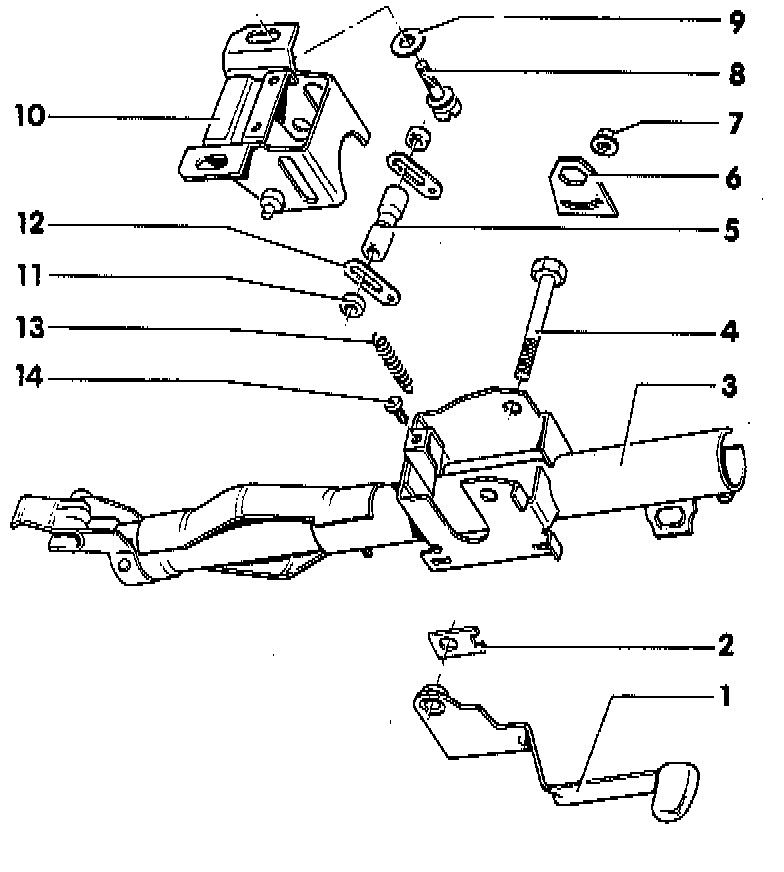

Tube For Height-Adjustable Wheel, Removing & Installing

Tube For Adjustable Column
1 Operating Lever
2 Packing
3 Column Tube
- Square housing fits over mounting bracket
4 Bolt With Left-hand Thread
- Tighten to: 22 Nm (16 ft. lbs.) with lever on upper stop
- After tightening install lock plate
5 Clamping Sleeve
6 Lock Plate
7 Nut
- Always replace
- Tighten to: 8 Nm (71 inch lbs.)
8 Shear Bolt
- Tighten until head shears off
9 Washer
10 Mounting Bracket
- Coat sliding surfaces with MoS2 grease before assembling
11 Thrust Washer
12 Plate
13 Return Spring
- Hooked into mounting bracket on column tube
14 Rubber Stop